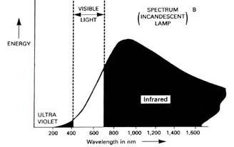

|
Why do we use light bulbs and light fixtures in our homes? The answer is simple, really: because it gets dark at night and we don't want to bump into things. Even during the daytime we often need some kind of artificial lighting, because it's hard to get sunlight into every room of the home or office. And, of course, sunlight doesn't have a dimmer switch -- we pretty much get what nature gives us. |
In The Beginning: The Dawn of Man Through
the 1700s
For most of human history, people had
to build a fire if they wanted extra light. That had its drawbacks, of
course: fire is a better source of heat than light and tends to burn out
quickly.
So, about 5,000 years ago, the candle was developed to provide a more reliable, long-lived light source. By the 1700s, people began putting lanterns around them to keep them from blowing out in the wind, and reflectors behind them to help aim the meager light they provided. They also figured out that the wick could be dunked in oil, which was at that time obtained from whale blubber. As a result, many types of whales hunted for their precious blubber nearly became extinct (is it any wonder that environmentalists care about lighting?)
As time went on, some manufacturers switched from
oil lamps to gas lamps, and people began connecting central natural gas
lines to their houses. This made it possible for the first time for lights
to operate unattended in the home (parents have been nagging their kids
to switch off the lights when they leave the room ever since).
|
It's Electrifying: the 1800's A physicist named James Prescott Joule made
a cool discovery around that same time: if you run enough electricity
through certain fibers or metals, they glow white hot, producing
a very bright light. Of course he had to look fast; by the time
these filaments starting glowing white hot, they usually burned
up a few seconds later. So Joule discovered the principle of incandescence
and got the Joule Effect named after him, but missed out on the
big bucks by not finding a way to turn this discovery into a light
bulb. |
 |
Edison raised a bunch of money in the 1870s by telling stockholders that his light bulb was nearly done (like he always said, genius was 99 percent making stuff up and only 1 percent sweat, or something like that). With the money in hand, he set out to build his first working prototype, which took 5 years. In 1879, his first successful light bulb used a carbon-cotton filament and burned a whopping 40 hours before failing, which was quite an accomplishment at the time. Edison built the first central power plant about a year later in New York City, figuring he'd sell more light bulbs if people could actually switch them on (genius!) Actually, the guy knew a good business when he saw one. His Edison Illuminating Company eventually became General Electric and he became a major stockholder, which explains why Edison's kids didn't need to sweat as much as dear old dad, if you get our drift…
Tweaks and Tune-Ups
Various improvements were made to the
filament over the next few decades, including the use of tungsten, which
succeeded in extending bulb life and increasing light output. In 1959,
scientists discovered that adding halogen gases inside the bulb helped
even more, by encouraging the tungsten that boiled off of the filament
to redeposit. This allowed the light bulbs to run hotter without burning
out prematurely and explains the term tungsten halogen bulb.
The problem was, each of these developments perpetuated the original link between heat and light that began with the cave dwellers. Whether through campfires, candles, gas jets, electric sparks, or hot filaments, we were still heating up wood, a wick or a wire to make light, which is kind of a dumb way to do things. In fact, even in the best designs, 80 to 90 percent of the energy consumed was producing heat, which was often undesirable, while only 10 to 20 percent was producing visible light that people could use for not bumping into things.
Totally Tubular - The Birth of the Fluorescent
Lamp
In the 1930s, scientists finally broke
this link between heat and light by producing the first fluorescent lamp.
By energizing mercury gas inside of a long tube, they could make the tube
fluoresce - giving off ultraviolet (UV) light when the charged vapor returned
to its normal, uncharged state. This purplish light would have been awesome
for making the scientists' black light velvet posters glow in the dark,
but those posters weren't really popular until the 1970s.
So instead, they figured out how to coat the inside of the lamps with chalky chemicals called phosphors, which helped convert the UV into visible light. Still, those early fluorescent lights were pretty ghastly, and convinced a lot of people that they looked like cadavers under fluorescent light. Indeed, some cheap fluorescents sold today continue to have that same cold, blue color, because they only use one halo-phosphor. These products give fluorescent light a bad rap, although they work well in morgues… Fortunately there are far better fluorescent lights available now, including the ones available here at LightSite.
Not Your Father's Fluorescents
Eventually scientists
figured out that they could combine three different phosphors (red, blue
and green) to get a much more natural, white-looking light. These tri-phosphor
or tri-stimulus phosphor lamps are more expensive than the halo-phosphor
variety, but produce far better color and are also significantly more
energy efficient. Unlike incandescent bulbs, they turn much more of their
electricity into light instead of heat, making them safer as well.
Fluorescent lamps sold relatively well in the 1950s, 60s and 70s, but were still pretty bulky and hard to fit in many places in the home. The lamps were 4 or even 8 feet long, and often buzzed and flickered when they were on. The circuit that made them work, the magnetic ballast, was to blame. It switched the lamp on and off only 60 times per second, which was slow enough for many people to see a headache-inducing strobing effect and for most people to hear an annoying buzz.
By the late 1970s, scientists figured out how to make a high frequency or electronic ballast that solved both problems. It switched the lamp on and off more than 25,000 times per second - so fast that it couldn't be seen or heard by anyone but Superman (who had X-Ray vision and didn't need lighting anyway). This very high tech gizmo is a lot smaller than a typical magnetic ballast, and can fit in tight spaces. At almost the same time, scientists began making shorter, skinnier fluorescent tubes that could be folded or curved into really cool, compact shapes.
|
Good Fluorescents Come In Small Packages Over time, manufacturers have become increasingly clever at finding ways to fold those tubes into smaller and smaller spaces. Today's CFLs are generally pretty close to the size of typical light bulbs, and come in a number of funky shapes like U-shaped, circular, tubular, coiled, and even pretzel (sort of). Chances are, you can now find one to fit in almost any light socket in the house, and LightSite offers more types than you'll find almost anywhere else. |
Manufacturers also began offering compact fluorescent lamps with metal pins at the base rather than a round socket. Instead of screwing them into existing fixtures, you plug these lamps into the ballasts of dedicated fixtures, which are designed to work only with fluorescent sources. Since the ballasts usually last longer than the fluorescent lamps and cost more, this is a smart idea that can save you money.
These dedicated fixtures come in two key varieties: hard-wired or permanent fixtures and portable fixtures. The first kind is usually connected directly to the wall or ceiling or mounted outside, and controlled by a wall switch, while the second kind can be used anywhere there is an electric outlet and usually provides its own switch.
| Just Look for the
ENERGY STAR®
Label In 1997, the U.S. Environmental Protection Agency (EPA) and the Department of Energy (DOE) joined forces to announce the creation of an ENERGY STAR® label for dedicated residential light fixtures. In 1999, they launched a similar label for compact fluorescent lamps. This means you don't have to know what CRI, or CFL, or tri-stimulus phosphor means if you don't want to. Just look for the ENERGY STAR® label and you'll know you're buying a high quality, energy efficient, long-lasting, and safe lighting product. And what better place to look than lightsite.net - your one-stop shop for ENERGY STAR lighting products! |
|  |
Lighting Sources - Technically Speaking What we call "white" light normally consists of some of each of those colors. The sun tends to give relatively equal emphasis to all of the colors. By contrast, incandescent light emphasizes reddish tones, but is weak in the blues and greens. Fluorescent light is stronger in the blues and greens, but tends to underemphasize reddish colors. Of course, fluorescent lighting is available in a wide variety of color palettes, so it should be possible to find one that meets your needs. |
Types of Light Sources
We use artificial
light sources as a substitute for sunlight in the home. Some provide general
illumination throughout the room, and are referred to as ambient light
sources. Others are focused on a particular area where we might be working,
such as a desk or kitchen countertop. These are referred to as task lighting.
Still others are intended to highlight something in the room with a pool
of light that stands out from the ambient light around it. These are called
accent lighting.
LightSite includes mostly ambient light sources, but offers a few task fixtures as well. Torchieres are a special kind of ambient light, because they do their lighting indirectly. Their light shines on the ceiling and is then reflected back into the room as a soft, diffuse glow, similar to the bright sky that provides shadowless, even illumination when the sun is behind a cloud. No wonder people like indirect lighting - it reminds us of being outside!
Living a Glare-free Life
Good lighting
is a subjective thing, and varies enormously according to personal taste
and preference. However, certain general practices have become standardized
over the years to achieve lighting that is pleasing to most people. These
include recommended levels of lighting for particular tasks, and some
recommended advice about avoiding glare. Some of this can get fairly complicated
- for now, here is our basic advice about avoiding glare.
Glare happens most frequently when one source of light is dramatically brighter than the others around it and shines directly at you or bounces into your eyes. Some differences in lighting levels within a room can create visual interest, but too great of a difference often causes glare. With particularly bright light sources, be sure that a diffuser or reflector prevents you from seeing the bulb directly. This will help reduce glare and make the users of the space more comfortable.
If you need an even, diffuse source of light, consider purchasing a linear fluorescent instead of a series of compact fluorescents. Linear fluorescents tend to offer higher energy efficiency, longer lifetime, and bright, diffuse light just where you need it.
Smart Bulb Shopping
How do you know which bulbs to buy? Virtually
every light bulb on the market provides three key pieces of information
on a standard label: light output (lumens), power usage (watts), and lifetime
(hours). To save money, improve comfort, and prevent pollution, you need
to read and understand that label. It is your key to understanding why
some light bulbs are worth far more than others. In lighting, as in many
products, you get what you pay for.
Comparing Incandescent, Halogen, and Fluorescent
Lighting: How to Get the Most for Your Money
The easiest way to see the differences
between the various types of light bulbs is to take an actual example.
Suppose you are about to buy a 75 watt incandescent light bulb. What are
your alternatives? There are three main ones: full-spectrum incandescent,
halogen, and compact fluorescent.
"Full-spectrum" bulbs claim to provide a much more natural-looking light and to be better for you, which is why they're commonly sold in natural food stores. Halogen bulbs claim to provide a whiter light, last longer, and reduce energy use. Compact fluorescents also claim to last longer and reduce energy use, while providing a softer light. Can they all be right?
Forget the hype - let's
look at the facts.
|
Light Output |
|
|
Power Use You don't buy a 75 watt light bulb because you want it to use 75 watts of electricity. You buy a 75 watt bulb because you want a certain amount of light output -- in this case, about 1200 lumens. The various light bulbs require anywhere from 18 to 100 watts of power to provide that much light. What a difference |
| Energy Efficiency You've just discovered a key lighting principle: energy efficiency. In cars, we measure that with miles per gallon (MPG). Energy efficient cars might average 35 or 40 miles per gallon, while gas guzzlers might get only 10 to 15 miles per gallon. Lighting works the same way: light bulbs with a high number of lumens per watt (LPW) are more energy efficient than those with a lower number of lumens per watt. The compact fluorescent provides more than 5 times as many lumens per watt as the full spectrum incandescent. That's like replacing a 20 miles per gallon car with one that gets 100 miles per gallon! |
| Lifetime Next consider product lifetime. If you use your light bulb about 4 hours each day, a CFL will last nearly 7 years, while an incandescent bulb will last about 6 months. Remember that these figures are averages. Compact fluorescents will burn for more total hours if left on for a couple of hours at a time. Switching them on and off frequently can shorten their life. |
| Total Costs Finally, let's look at total costs. We all know that compact fluorescents are more expensive than regular light bulbs. But when we figure in the price of the bulbs, their lifetime, their power use, and the typical cost of electricity (8 cents per kilowatt-hour), the actual numbers may surprise you. Per year, the compact fluorescent will cost you 62% less than the regular incandescent bulb, and a whopping 76% less than the full spectrum incandescent bulb. The halogen isn't such a great deal either - though it uses a little less energy than a normal incandescent, it costs so much more to buy that you end up spending more per year total. |
Adding It All Up
The lesson here is an easy one. The bulbs that look the cheapest in the store often end up costing you more. They burn out quickly and use a lot of electricity. To get the most for your money, buy compact fluorescent lamps instead. You'll save time, save money, and help save the environment.
The Benefits of Energy Efficient Lighting - Save Money, Save the Environment, Save Lives
The Problem
Lighting accounts for about 15% of a typical
household's electricity bill. That translates into an incredible $11 billion
a year worth of utility bills nationwide.
Home lighting currently accounts for about 3% of all U.S. carbon dioxide emissions, which contribute to global warming. It also causes about 4% of the sulfur oxides pollution that causes acid rain, and about 2% of nitrogen oxides pollution that causes urban smog. That may not seem as big as other energy users like air conditioners or diesel trucks, but remember that virtually everyone in the country can help prevent pollution through better home lighting.
The Solution
Energy efficient lighting products like the
ones offered at LightSite can reduce electricity use by 60 to 80%, depending
on the application. But what does that really mean for the environment?
If you consume less electricity in your home or office, the utilities need to generate less electricity at the power plant. That means they burn fewer fossil fuels and cause less air pollution. In other words, you can help the environment, immediately and directly, by switching to efficient lighting products and using them wisely.
|
Energy efficient bulbs and fixtures also operate at much lower temperatures, which means they are safer and more comfortable. Halogen torchieres have already caused more than 430 fires, and light bulbs of all types cause about 2,800 fires and 25 deaths per year. It pays to use cooler-running lighting products to make your home a safer place, especially in children's rooms and any place where pets or kids could knock over a light fixture or reach its hot bulb. Energy-saving bulbs and fixtures also last far longer, partly because they are not burning themselves up with heat. Market research consistently shows that longer life is the most desirable single quality in light bulbs. By that measure, fluorescent lamps are the clear leader, lasting 10 to 13 times longer than typical incandescents. That means convenience. |
Q:
How can I tell the difference between fluorescent bulbs with good
color and the ones that are harsh and cold-looking?
A: Almost all light bulbs are marked with a color rendering index or CRI - a number between 1 and 100 that measures how well a light source renders different colors. Incandescent bulbs automatically get 100 because they were around first. Cheap halo-phosphor (often called "cool white") fluorescents usually only score a little more than 50 on that scale. But higher quality fluorescents routinely manage 70, 80 or even 90 - making their ability to render different colors very close to that of an incandescent bulb. All ENERGY STARlabeled lighting products for indoor use have a CRI of at least 70 and most are above 80. LightSite is committed to carrying only fluorescent lamps that provide attractive light; see our comparison chart for the full scoop on CRI.
|
Color Temperature is the other key
thing to consider. This number always ends in a "K" for "Kelvins"
and measures the relative warmth or coolness of a lamp's lighting
color. Lower numbers mysteriously correspond to warmer-looking light
(emphasizing red, orange and yellow tones). Higher numbers correspond
to cooler-looking light (emphasizing green, blue and purple tones).
If you want a yellowish light to use in room with lots of natural wood or earth tones, get a lamp with a color temperature of 2700 to 3500 K. If you want a whitish light to use in a room that has mostly green, blue, purple, or white colors, get a lamp with a color temperature of 4100 to 6000 K (see comparison chart for details). To most people, lamps with cooler color temperatures appear somewhat brighter than lamps with warmer color temperatures, though not necessarily more attractive. In fact, the familiar incandescent bulb has a color temperature of 2700 K, so most compact fluorescent lamps aim pretty close to that color temperature. Are compact fluorescent lamps (CFLs) bright enough to use in my house? I bought one a few years ago and it didn't give me enough light for reading. Most people prefer to use light bulbs providing about 1700 to 2800 lumens of light output for reading (100 to 150 watts in an incandescent bulb). As you can see from our comparison chart, this is also achievable with many of today's CFLs. Dividing your incandescent wattage by 3 will give you the approximate CFL wattage you need. Early CFLs had a harder time with this, because manufacturers couldn't figure out how to fold the tube tightly enough to get enough lamp surface area into a small volume. This photo shows how CFLs have shrunk over the last 12 years. The latest designs have some really elaborate shapes, including spiral. |
One more thing: if you want a CFL for reading with a table or floor lamp, consider using a circular or 2D lamp. These lamps are especially designed to curve around the outside of the metal harp that supports the shades of most table and floor lamps. They also aim most of their light up and down (toward what you are reading) rather than sideways (out into the room).
Q: I've heard that CFLs don't always last as long as the manufacturers claim. Is that true?
A: Sometimes. This is one of our most complicated subjects at LightSite, but here are the key issues. Lifetime is determined with an official test procedure in which numerous samples of a light bulb are repeatedly switched on for 3 hours and off for 20 minutes. Median (average) lifetime is measured at the number of elapsed operating hours when half of the samples have failed. In other words, if a light bulb is rated to last for 10,000 hours, normally half of those models will fail prior to that point, and half will fail later. Manufacturers try to minimize the amount of this variation within a particular model, but random chance will still play a role in whether your specific bulb lasts a bit longer or shorter than its rated lifetime.
Remember that the lifetime of regular light bulbs is determined mostly by total hours of use, whereas CFL lifetime is often more strongly affected by total number of times the lamp is switched on and off.
For example, the Lighting Research Center (LRC) recently found that some compact fluorescent lamps would only last about 500 to 2000 hours when switched repeatedly on for 5 minutes and off for 20 seconds. By contrast, the same products were found to last about 8 times longer if switched on for 3 hours and switched off for 20 minutes. What a difference! It pays to use CFLs in sockets where they will be on for a couple of hours at a time.
There are differences between individual manufacturers as well. The same LRC test procedure, although it only tested 4 samples of each bulb, found that some manufacturers' CFLs failed on the standard test as early as 4,000 hours, while others' had been running nearly 20,000 hours and still hadn't failed yet. Click here to see the whole report, and remember that manufacturers have already made many improvements in their products since this research was conducted. Also remember that LightSite has chosen products that we feel will provide good performance and long life, and we stand behind that with a money-back guarantee.
There are also a few tips for how to use your CFL to maximize its life. Don't use it on a timer or motion sensor unless that control specifically says it's OK to use with CFLs. Putting CFLs in a really hot place, like a completely enclosed light fixture with no air circulation, may also shorten their life.
Finally, remember that CFLs last far longer than incandescent or halogen bulbs on average, and are still the best choice by far when you want to avoid the hassle of frequent bulb replacements.
Q: Can I just replace the halogen bulb in my torchiere with a CFL to save energy and make it safer?
A: This is probably the most common question we have received at LightSite. Although we know of one manufacturer that is working on a prototype that would convert halogen torchieres to fluorescent, we think the chances of its success are still low, for three reasons:
- Torchieres have two electrical contacts 118 millimeters apart that are designed to hold a halogen bulb under spring tension. It is tough to convert a standard screw-based CFL to connect to those contacts, fit within the torchiere bowl, and be stable enough not to fall out.
- 2. Underwriters Laboratories (UL) certification would be needed for this retrofit kit, but would be very difficult to get, since the manufacturer would have to prove that the kit could work safely with every major type of halogen torchiere on the market.
- 3. The liability risk for the manufacturer of such a retrofit kit could be high. Many halogen torchieres are very cheaply made, and their circuitry could cause problems with a retrofit kit, even if it used very high quality circuits. Just getting a retrofit kit to work reliably and consistently with the dimmers in most halogen torchieres would be hard enough.
You're much better off to recycle your old halogen torchiere and purchase a new ENERGY STAR torchiere from LightSite or your local retail store. The money you save in replacement bulbs and energy bills will normally pay for the extra cost in 9 months to a year and a half.
Q: I thought halogen bulbs were supposed to be a little more energy efficient than incandescent. How come halogen torchieres are such energy wasters?
A: Good question. As we mentioned in the history of lighting, halogen bulbs usually improve energy efficiency and lifetime a little. The halogen gas inside snatches up tungsten atoms that have boiled off of the filament and re-deposits them back on the filament. This allows the filament to run at higher temperatures than it otherwise would, without causing the lamp to fail quickly. Higher filament temperatures normally increase energy efficiency, though they obviously pose a greater safety risk as well.
In fact, if you buy a halogen bulb from one of the major domestic manufacturers (GE, Osram/Sylvania, or Philips), it should provide a few more lumens per watt than a normal incandescent bulb. But these fancy halogen bulbs are rarely sold with halogen torchieres. They usually cost about twice as much as generic replacement bulbs, so many people have never used one. And be careful: these bulbs may be your brightest option for a halogen torchiere, but are often the hottest as well.
| The imported halogen bulbs that come with torchieres appear to be very cheaply made. Their filaments may be thinner than normal or contain impurities. They may not have as much halogen gas in them as they should. We don't know for sure what is different about them, but we do know that they often provide significantly lower efficiency and less light than they are rated to provide. In testing at Lawrence Berkeley National Laboratories, scientists found that these bulbs routinely provide only 12 to 16 lumens per watt (LPW), compared to 17 LPW for 100 watt incandescent bulbs, about 19 to 22 LPW for domestic halogen bulbs, and about 65 to 75 LPW for ENERGY STAR torchieres. The next time you see a halogen or incandescent torchiere package claiming to be energy efficient, don't believe it. ENERGY STAR is the clear winner for energy efficiency. |
Q: When does halogen lighting make sense in the home?
A: Halogen lighting is a great way to provide a very intense, white, focused light in a small space. Low voltage halogen track lights and spot lights are a great choice for illuminating artwork, for example, because they aim a small amount of light right where it is needed and don't take up a lot of space to do it. Many desk lights use 20 watt halogen bulbs in very slender, elegant fittings to help you read or do fine work. Halogen is a great choice in this application, because fluorescent and normal incandescent fixtures would be much bulkier and could not aim the light as precisely.
By contrast, torchieres are a terrible application for halogen bulbs. They are used for general room lighting and scatter their light very broadly. Also they require enormous amounts of light output to give you enough illumination down at eye level to read or work by. There are three reasons for this. First, more than 10% of the light gets absorbed immediately in the fixture. Second, much of the light is absorbed in the ceiling or walls, and never reflected back to you. Third, the light has to travel much farther to get from the top of the fixture to the ceiling and back down to you than if it could just shine directly toward you (like a shaded table or floor lamp).
Because light intensity diminishes by the square of the distance it travels, that third factor makes a huge difference. Suppose the light from a desk lamp only travels 2 feet to reach you, but the light from a torchiere must travel a total of 8 feet (3 feet up to the ceiling and 5 feet back down) to reach you. To get the same amount of light, the torchiere needs to be not just 4 times (8 feet / 2 feet) as bright, but at least 16 times (42) as bright.
To borrow a phrase from our technical aspects of lighting section, use low wattage halogen bulbs for certain task and accent lighting applications. You should almost never use halogen bulbs for general or ambient lighting. For tasks where you need a broad area illuminated, like work benches or kitchen countertops, halogen lighting is also a bad idea. Linear fluorescent lamps work much better, because they provide a very even, continuous light output and can be hidden easily behind molding strips so they don't shine directly in your eyes.
Q: I keep hearing about full spectrum or natural spectrum lighting. Is it really better for you than other kinds of artificial lighting?
A: That's a tough one. First we should define full spectrum lighting. Take a look at these three charts. As you can see, sunlight includes relatively even amounts of red, green and blue light. Typical incandescent bulbs provide a bit of overkill with the reds, a moderate amount of greens, and not enough blue. Typical fluorescent bulbs are heavily concentrated in the greens and blues, but weaker in the reds. Full spectrum lamps attempt to mimic the distribution of light output in sunlight. They can be either incandescent or fluorescent, though the incandescent variety is much more commonly available.
As we noted in our earlier section on incandescent, halogen, and compact fluorescent bulbs, full spectrum bulbs are very expensive and appear to be even less energy efficient than typical incandescent bulbs. They seem to include a coating that blocks some of the light the bulb would normally produce, which shifts the balance of its colors but reduces efficiency.
There is some evidence that full spectrum bulbs can help prevent Seasonal Affective Disorder (SAD) if used at very high lighting levels, but many of the products on the market do not provide anywhere near that much light. In fact, the special light boxes that doctors prescribe for patients with SAD provide about 8 to 20 times as much light as typical indoor levels. The evidence to support other claims about effects on mood and productivity is far more mixed. For the full scoop, check out this website: link to IRC report.
Q: Is fluorescent lighting bad for you? I've heard it causes cancer.
A: This is one of those rumors that refuses to go away, and gets passed around like the urban legend about the woman who tried to dry her pet in the microwave (bad idea). There is no evidence to suggest that fluorescent lighting causes cancer.
We do know that ultraviolet (UV) light can cause skin cancer, but sunlight contains about 100 to 1,000 times as much UV light as typical indoor lighting. Halogen and metal halide (HID) light sources generally produce the most UV of typical lighting products. Compact fluorescent and incandescent bulbs each produce a much lower amount of UV light, which can be even further reduced by various types of lenses and diffusers on your light fixtures.
We do know that high quality, modern fluorescent lighting is better for your health and productivity than older fluorescent lighting. The newest products switch on and off extremely rapidly, which greatly reduces the chances that people working under the light will suffer headaches or eyestrain from buzz or flicker. In fact, in some locations where workers are doing data entry or sorting mail, tests have shown that super-efficient lighting in well-designed fixtures can improve productivity enough to pay for itself, without even counting the energy savings.